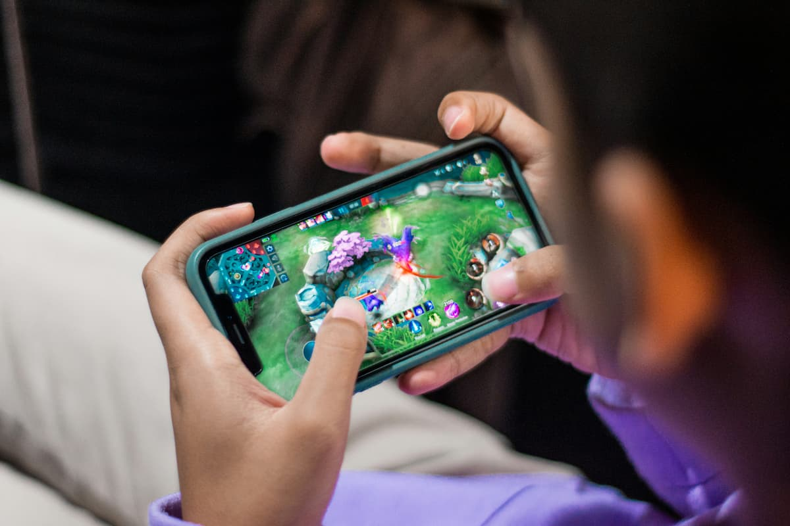

BARUProyek Terbaru
Proyek ini menampilkan hobi saya dalam dunia gaming serta ketertarikan saya terhadap teknologi.
Saya suka bermain game saat ada waktu luang, apalagi setelah selesai mengerjakan tugas. Bermain game bisa menjadi salah satu cara saya untuk bersantai dan menghibur diri.
Ada banyak jenis game yang saya coba, mulai dari game petualangan sampai game online. Setiap game punya keseruan dan tantangannya masing-masing.
Saya juga suka mengikuti perkembangan teknologi, terutama tentang komputer dan dunia digital. Menurut saya, ada banyak hal menarik yang bisa dipelajari dari teknologi.
Sekarang saya sedang belajar membuat website menggunakan HTML dan CSS. Awalnya masih sering bingung, tetapi lama-kelamaan saya mulai memahami cara membuat dan mengatur tampilan website.
Selama belajar coding, saya jadi tahu cara mengatur warna, ukuran, jarak, dan posisi tulisan maupun gambar. Saya juga bisa mencoba berbagai desain agar tampilan website terlihat lebih menarik.
Ke depannya, saya ingin lebih banyak berlatih dan mencoba membuat website sendiri. Semoga kemampuan saya dalam coding bisa terus berkembang dan menghasilkan proyek yang lebih bagus.